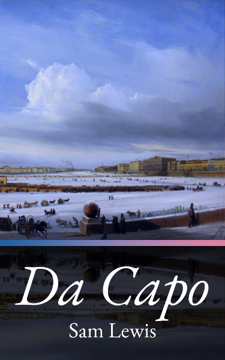

Da Capo
by Sam Lewis
For all the difference it made
Chapter 1
I climbed out of my carriage and landed in the snow, leaving two little marks with my boots. I loved my boots; they were very fine and made good marks and good sounds when I moved about. I spun on my heels, and the scraping noise they made was very good indeed. I walked away from the street and my carriage, leaving a trail of little marks in the snow behind me.
My home did not have any snow, powdered or otherwise, but I was not at my home—I was in St. Petersburg. I had come here, some small number of years ago, to the beating heart of culture on the Neva, seeking a novel kind of continental sophistication that could only be cultivated in a woman’s empire. It was a city of neoclassical wonders, but when the empress died, I watched the river run cold and freeze over.
Vittoriosa, so far from here, was warm and humid, made of old stone, and no longer independent; we had been made a French appendage only recently. My noble titles had, in all likelihood, been burned already.
Tragedy abounds and compounds upon itself, and so I played my little games.
I made my way from the carriage to the front of the residence—it was a charming building, three stories tall, well worth the money I paid each month to stay in it—and made my presence known at the door by knocking. There was no extravagant, polished brass door knocker here, no ħabbata, and while the simple iron implement did not wear any family crest, it served its function well enough when I rapped it three times.
I waited to be received, holding my gloved hands together in front of me politely after I had adjusted my fur coat. I already knew who would greet me—Auntie—and I knew approximately how long it would take for her to reach the front door and open it. Indeed, we had choreographed this entire performance in advance, to be played out according to my design.
Auntie is what I called my courtesan, though her full name was Grace Clara Foster. I paid her each month as well, and she was as charming as the building I put her in, and equally worth the money. She was much older than me, I estimate two years to every one of mine, and very beautiful. She had a funny accent, owing to her birth in the American colonies, and had coloured it with high society life throughout all of Europe’s great cities. I was merely an exotic curiosity, and so it was through her influence that I was able to obtain letters of introduction.
Presently, she opened the door and curtseyed—perfectly; just as Susanna might have done.
“Sinjorina,” she said by way of greeting, affecting my own accent as best she could. “It is a pleasure to welcome you home.”
She was wearing a very fashionable pink gown of superior quality—we had been unable to find a maidservant’s dress that suited my taste.
The distracting outfit was something we would have to work on, as my own talent for sketching had proved inadequate when attempting to reproduce the dress I remembered from my girlhood in Malta.
“I am here, Susanna,” I said to her. “And I bring with me tales of the continent and my time in Vienna. Come, let us retire to my bedchamber to unpack, and I shall tell you everything you desire to hear.”
“Then shall I go to the carriage to fetch your bag, Sinjorina?” said Auntie. “You appear to have forgotten it.”
Had I? So I had. I had been distracted by my thoughts. We had only just begun, and I was already making mistakes.
“Merda!” I cried. “Go, go inside, Auntie! We must start over from the beginning. Susanna would ask to fetch my bag, as you did just now, but I would not have been so careless as to forget it when coming home.”
“Must we?” replied Auntie. “The bag is nearly empty, so why not continue from here? Let us imagine that another servant has already taken it inside.”
“No! It will not do,” I replied. “I would never let another servant besides Susanna touch my bag.”
I swept around to face the carriage, which had no horses, and lifted my skirts to hurry back.
“Go!” I repeated over my shoulder. “Back inside, Auntie! We will start over.”
I heard the door close behind me as I made another trail of little marks in the snow with my fine boots. I arrived at the carriage, climbed back inside, and retrieved my bag.
It was a poor facsimile of a traveller’s luggage, full of nothing but old, unlaundered clothes—a theatrical property, and no more than that.
Chapter 1
I landed back in the snow. My fine boots scuffed the little marks that were already there. I exhaled and watched as my breath froze in the air. Once more, I strode away from the carriage and towards the residence, only this time I was burdened with my little affectation of travel.
I knocked three more times with the iron knocker, then laid my bag at my feet in the snow and clasped my gloved hands together politely. I waited the allotted time and heard footsteps from inside.
Auntie opened the door and curtseyed again.
“Sinjorina, it is my pleasure to welcome you home,” she said, with all the care and grace that I paid to expect from her.
“I am here, Susanna,” I replied, “and I bring with me tales of the continent, of my time in Vienna and further afield. Come, let us retire to my bedchamber to unpack my belongings, and I will tell you all you wish to know.”
“May I take your bag, Sinjorina?” she said.
“Please do. I find that the journey has exhausted me. Your kindness and consideration are welcome balms after my days at sea.”
I smiled as she leaned down to retrieve my bag, and was delighted when she lifted it onto her shoulder and went indoors.
“Grazie,” I said as I followed her.
We halted momentarily as she took the time to close the door behind me, then resumed our exercise as we made our way upstairs to my furnished apartment.
She glanced at me briefly, but directly, as we ascended the stairs.
“Demurely,” I reminded her. “Do not forget your station.”
“Of course, Sinjorina,” she replied. “Forgive me, but I have not seen you in years. I only wish to see how much you have grown since we last knew one another.”
“There will be plenty of time for that,” I assured her. “I expect to spend a great deal of time in your care and company, Susanna. I trust you remember how to make my favourite cioccolata calda?”
“Does the Sinjorina desire it once we are inside?”
“Not just yet, Susanna. There is no need to make haste.”
Auntie withdrew a key once we arrived at my door and unlocked the apartment. We went inside, and I directed her with a gesture to relieve herself of the burden of my bag.
With both hands now freed, she hurried around the room and lit the lamps and the hearth for me, revealing the baroque interior. I tried to ignore how high the ceilings were and how cold it was, and imagined myself back in my family home instead.
For the duration of this game, I was not in Russia, but in Malta, and Auntie was not herself, but my faithful maidservant Susanna—this was the design I had laid out for today’s entertainment.
Auntie, having adjusted the final lamp, returned at once to my side from the other end of the room, taking great long strides as she did so, her skirts swishing across the floor with a dramatic sigh.
I held up my hand to caution her. “Susanna would not walk so brusquely.”
“I can hardly help the length of my legs,” she replied.
“Try again,” I suggested. “Walk slowly; with every move, you must seek not to disturb me.”
Auntie did as I asked, returning to the other end of the room to repeat the walk. This time, she performed to my satisfaction. Her hands were clasped neatly at her waist and her footsteps were paced evenly and cautiously.
I felt a little thrill, not just at her acquiescence, but at how much she reminded me of Susanna.
“May I take your coat and gloves, Sinjorina?”
“You may do more than that, Susanna,” I whispered, reaching out to lift her chin with one of my fingers.
To my great delight, she kept her gaze below my eyes even as I lifted her head.
“I do not take your meaning, Sinjorina.”
“Come now, Susanna, we are alone. We have known each other since we were girls. You may use my name.”
Only then did Susanna lift her gaze to meet mine, and only for a moment.
“Elodie,” she whispered.
I smiled at her. “There, now, was that so hard?”
I held out my hands to her.
“My gloves, Dolcezza.”
She took my hands and gently slipped my gloves off, exposing my naked skin, which she proceeded to gently massage.
“Still cold,” she observed, the harsh reality of the season briefly intruding on my fantasy.
The gesture was carried out on both hands. Her touch was provocative, but ill-suited to a maidservant.
“Not quite so forward, Auntie,” I corrected. “Let it happen naturally.”
She nodded, seeming to understand as she set the gloves aside on a nearby vanity, then moved behind me and reached for my coat, slipping it delicately off my shoulders. I sighed as she pulled it down my back and along the length of my arms.
All in all, and despite the occasional fumble, she knew just how to please me.
“Satisfactory?” she whispered over my shoulder.
“Certainly, though you need not draw attention to your successes,” I replied. “I assure you: I will notice them.”
Auntie hung up my coat on the coat rack.
“Do you require anything further, Sinjorina, or shall I take my leave?”
“Don’t leave me,” I said suddenly, turning to face her. “I mean . . . Susanna, I have only just come home. I still have all my stories to tell you. Will you not sit with me?”
She hesitated. “If it pleases you.”
“It does please me.”
I found the chaise before the fire and sank into it. “You called me by my title again,” I noted.
“Was I wrong?”
I considered it. “No,” I decided. “Susanna was cautious about using my name as well. I frequently had to remind her that it was acceptable when we were alone.”
“Then I am glad to have anticipated your desires.”
She sat beside me, her posture impeccable.
“Susanna, do you recall when we were little?” I asked.
“I do,” Auntie lied.
“Do you recall the games we played?”
“Certainly, I do.”
“And do you recall how I used to sit in your lap?”
Auntie did not miss a step. “I would not be your faithful servant if I forgot such things,” she answered me.
“Then, may I sit in your lap now, Susanna?”
“I . . . am not certain it is proper, now that we are grown.”
Her reluctance was exactly as I had expected and wished it to be, which pleased me to no end.
“Susanna, you are so polite!” I laughed. “What has become of you in my absence?”
“I fear I have learned my place, Sinjorina.”
“Hmm, so it seems, but I have no need of such rigid propriety, Susanna. Let me sit upon your lap.”
“But should your father see us . . .” Auntie began.
I rose at once from the chaise, took two frustrated steps, then spun around to face my courtesan. I first pressed a finger to my temple, then pointed at her.
“My father is not present in this fantasy, Auntie, please do not add elements as you fancy.”
“I do apologise, and I shall endeavour not to do so in future. However, it would help me, Little Flower, if you could give me some sense of my motivations and of the setting’s extremities.”
“I am no playwright, Auntie. Would you have me write a script?” I countered. “This is an exercise in improvisation. You are to be Susanna, my beloved maidservant, welcoming me home after a long sojourn abroad. This is the key.
“If I give you any more than that, then there is less room for you to surprise and delight me. Da capo.”
I returned to the chaise, and Auntie straightened her posture beautifully. We began the scene anew.
Chapter 1
I stretched out on the chaise, making myself quite comfortable with Auntie at my side.
“Do you remember, Susanna, the games we played in the garden?” I prompted.
“I do, Sinjorina,” said Auntie, falling back into character.
“I would chase you from one end to the other. Even now, I can recall the way you screamed with delight when I caught you.”
“I remember it well.”
“And when I was tired from playing, Susanna, I would rest my head against your lap.”
“And I would touch your hair.”
This detail delighted me. “Yes! Precisely so! So, you do remember after all, to your credit.”
I turned to face Auntie, and she lowered her head modestly. It was a perfect response, so like my maid.
“Then, may I indulge myself in your lap now, Susanna?”
She hesitated. “I am not certain, Sinjorina . . . such things may not be appropriate now that we are older.”
“Such a proper girl,” I replied. “Have we grown so far apart in so few years?”
“Not willingly, but perhaps inevitably.”
I shook my head gently. “Not inevitably, Dolcezza. There is still time—we are still young. An ocean has already kept us apart; let not the veil of propriety come between us as well, I beg you.”
“Sinjorina . . . Elodie. Do not ask me to choose.”
“Choose? What choice?”
“Between my place at your side, and my place in your heart. If I should fail in my duty . . .”
A terrible chill took hold of my heart as I understood her implication: she was afraid of losing her contract. I held up my hands to stop the scene from playing out any further.
“I do not like this direction, Auntie,” I said. “Let us return to the question of whether Susanna would let me sit in her lap.”
“I am not certain I understand,” she replied.
“The scene ought to continue with Susanna taking me into her lap,” I insisted. “I wish to act it out.”
“I thought we were improvising?”
“To a certain extent, yes, but also to an end. The scene is not romantic if we are miserable. Surely you understand?”
“As you wish. How is it that Susanna comes to agree to your request? It seems out-of-character for a modest maid.”
“It was a long time ago, and I was twelve,” I muttered. “I am certain, however, that it did happen in actuality . . . Oh! Yes! It was Susanna herself who suggested that I sit in her lap, not me. Curious, I wonder why I forgot that detail?”
“Well, now that you have remembered it, might I use it?”
“Yes, why not?”
“I shall have to adjust my character, if she is so bold.”
“Please do.”
Chapter 1
We both rose from the chaise to resume our game. Auntie turned to face me, but lowered her gaze properly.
“It is good to have you home, Sinjorina Elodie,” she said with a small curtsey. “Everyone has missed you, and I most of all.”
“I suppose I missed you too, sweet Susanna,” I replied, taking her hands in my own. “Even amidst the grandeur of the continent, I longed for your quiet comfort.
“But! I am home now, and I bring with me tales of Vienna that will turn your ears hot with envy. I can hardly contain myself.”
“I have no doubt. You must tell me all of your stories while we unpack your things.”
“Ah, but let us leave the chores until later,” I said. “Come, sit with me.”
I gestured to the chaise, and we both sat down, this time turned inward to one another and with our hands joined.
“My goodness, how you have grown since I saw you last,” said Auntie. “I wonder if perhaps you will someday stand taller than I do?”
It was a tease from Auntie, but I let it pass with only a polite laugh—it was just the sort of gentle tease that Susanna might have given me, and so I did not mind it at all.
“Why, I am all grown up now,” I said, my eyes twinkling. “Full of stories and secrets, like all ladies. I fear, however, that my height may have stalled—it seems you shall always have the advantage over me, Susanna.”
“I hardly think so, Sinjorina,” she replied. “Why, I remember when you would sit in my lap once upon a time and listen while I read you stories.
“Now look at you! You are a lady of charm and continental sophistication; you can hardly need me the way you once did.”
“That’s not true,” I whispered, holding her hands up to my breast. “I still need you, Dolcezza. Perhaps I grew too quickly in your absence.”
“You are an educated lady now,” Susanna said sadly. “Young, but no longer a girl. Why, I am certain you caught the eye of many a Viennese boy your age.”
“Do not say such things to me,” I said. “I am not interested in boys.”
“Then what interests you, Sinjorina?”
“You do.”
Susanna turned her head away, her cheeks flushing pink. “You must be mistaken,” she said.
“Am I? I did not just miss you, Susanna; every moment I was alone I thought of you. To be home is to be with you.”
“It is different now that we are older. I have a duty.”
“Your duty is to see that I want for nothing.”
She turned her head back to me, and lifted her gaze to meet my own. I felt my heart flutter, and she must have felt it too.
“You . . . will not tell anyone?” she asked.
“You have my word: what happens between us, remains between us.”
“Then . . .” She extracted her hands from my grasp, straightened her skirts, then patted her lap. “Will you sit with me, as you once did?”
I brightened considerably.
“You mean it?”
“My duty is to you, as you said.”
I rose from the chaise, then turned and settled back into Susanna’s lap. She wrapped her arms around my waist, holding me close and secure.
“Will you tell me your stories now, Elodie?” she whispered into my ear, causing me to shiver in delight.
“I could tell you of my governess, the Fräulein,” I replied. “Or, if you prefer, I could tell you of my music lessons, or of the opera I attended—one of the characters shared your name.”
“Hmm? Did she?”
“She did indeed, and I was distracted from the music by thoughts of you.”
Susanna rested her head on my shoulder, eliciting a blush from me. I could not restrain myself from leaning further into her embrace.
“What else?” she asked me.
“I attended salons and was introduced to a great many people whose names and titles I have forgotten.”
“Listen to yourself . . . You are a woman of the world, Elodie. How can I compare to what you have seen?”
“I assure you I have met no one and seen nothing that could replace you in my heart, Susanna. You are present in my earliest memories, and I hope you will be there at the end.”
“I serve at your pleasure, Sinjorina Elodie; if you take me with you, I will not leave.”
I closed my eyes and forced myself to hold back the tears.
“Auntie,” I said. “Let us play out a different scene. This one has run its course.”
“You are certain you do not wish to continue?” she asked.
“Quite.”
“I believe we could become rather amorous in such a position—with you on my lap.”
“I believe so too.”
“You do not wish it?”
I climbed out of her lap, then offered a hand to help her stand, which she took without complaint.
“Not yet,” I explained. “Another scene first.”
Chapter 1
This time when I sat, I indicated for Auntie to sit beside me, and when she chose to sit at a modest distance, I indicated for her to come closer. She hesitated only a moment before sliding over.
“That is much better, Susanna,” I said. “I do enjoy these quiet moments with you. Your company is a treasure I shall always cherish.”
“I did miss you while you were abroad, Sinjorina. The house was not the same without you.”
“Much quieter, I suspect you mean.”
“Well, I certainly had fewer chores, and fewer holes in fine dresses to mend, but that is to be expected; I was only beginning to learn my craft back then. It is also not what I meant to say.”
I leaned against her, feeling her warmth against my side, and braced myself with a hand on her upper arm.
“Speak, then. I am eager to hear what you mean.”
“In your absence, I missed our games. I missed reading stories to you. Most of all I missed moments like this—our closeness. No one else is as close to me as you are, Sinjorina, not even your sister, though I admire her.”
“Adele?”
“She is a kind, good girl,” said Auntie, “but she is not you. She has a funny way about her, as though she has already seen over the horizon and accepted it.”
“Will you tell me more?”
“About your sister?”
“No, silly, about me!” I laughed. “Tell me why I should be so special to you.”
“The way you look at me . . .”
“The way I look at you?” I looked at her now, tilting my head to see her face, though she tried to hide herself from me. “Do I look at you in a particular way?”
“Yes,” she replied. “The others are kind, but I am still a servant to them, if not at first, then over time as I became accustomed to my station.
“I knew you when you were merely a girl—when class did not come between us. Even now, after so long apart, you still look at me the same way.”
“It is because you are more than just my maidservant, Susanna. You are a dear friend and confidante.”
“I appreciate you saying so, Sinjorina . . . Elodie.”
“It is I who appreciates you.” I took her hand then and squeezed it. “To return to you is to return to a part of myself that I had left behind.”
She turned now to look back at me, and I was startled to see the depth of feeling in her expression, so strong and true to life that it momentarily took my breath away.
“And now that you are here,” she said, “will you stay?”
“Of course. I am home, so why should I leave?”
“I cannot imagine.”
“Then you have nothing to fear, Dolcezza, for I do not intend to ever leave you.”
“And yet . . . I admit that I am still afraid of losing you.”
This caused me to lose my concentration. I reeled, first imagining that it was actually Susanna who had said the words to me, then realising it was only Auntie.
I became frustrated, seeing that she was adding her own imaginings to the scene once again.
“Auntie,” I cautioned. “I fear you have strayed once more.”
“Would Susanna not be afraid of losing you, then?”
I released her hand and pulled away from her. “That is not the issue.”
“Ah, then you think she would not voice such a fear, if she had it?”
“Auntie, you are testing me,” I snapped.
“I only wish to understand so that I might bring your fantasy to life more vividly, Little Flower.”
“No, you are deliberately provoking me.”
“Am I?”
“I know you too well, Auntie. I know you disapprove of my fantasies and wish them to stop. You are playing your little tricks on me.”
“Really, Little Flower, you give me too much credit. I am doing my very best to keep up with you. Please believe me when I tell you that any mistakes I make are genuine misunderstandings, not manipulations.”
I searched her countenance for any signs of deception, and, finding none, let out a sigh as I fell back against her side.
“Very well,” I said, clutching her arm once more. “We will pick up again with our conversation on the chaise lounge.”
Chapter 1
I held her close, rubbing my cheek against her shoulder and resting it there. I felt that I belonged here, at Susanna’s side, and not in a faraway land, no matter the sophistication it might promise to teach me.
I would learn a simpler lesson here, but one of infinitely more depth and compassion.
“Tell me about home,” I said. “What has happened in my absence?”
“I am certain nothing compares to what you have seen in Vienna, Sinjorina.”
“Never mind what I have seen. I wish to know what I haven’t seen. What of my Aunt Maria and Uncle Giuseppe? Have they returned from their adventures in Sicily?”
“They have. In fact, I hear your aunt and uncle are expecting another child,” said Auntie. “You shall have another cousin soon, God willing.”
I gasped and lifted my head from her shoulder, my eyes wide and my mouth agape. I released her arm and clasped my hands together in excitement.
“A baby cousin? What wonderful news, Susanna! Oh, I shall have so much fun spoiling them, what a delight!”
I fell back against Auntie’s body and draped an arm across her chest, my hand resting on her opposite shoulder.
“I do hope they have the good sense not to name another child in our family ‘Vincenzo.’ We have quite enough of those already.
"But suppose the child is a girl? Wouldn’t that be fun, Susanna? We could get up to all sorts of mischief, couldn't we? What would be a good name for a girl?”
“Perhaps you could write a list of names you favour, Sinjorina? You could present it to your aunt and uncle next time they visit.”
“What a delightful idea! and a good excuse to practice my copperplate, too.”
“I have seen your hand in some of your letters,” said Susanna. “You write so beautifully.”
“You have not seen the half of it, Dolcezza. I wrote many more letters than I sent. Most of them were addressed to you.”
She turned her head to look down at me.
“To me, Sinjorina?”
“Yes. I could not send them, of course; neither my governess nor my parents would approve of my sending so many letters to a maid. Besides which, I could not chance them seeing what I wrote to you.”
“What did you write?”
I blushed. “A great many things, Susanna. I never had any expectation that those letters would be read, so I became quite bold in the things I put to paper.”
“But I am here now,” said Susanna. “You addressed them to me, so why can you not share their contents now?”
“I was a child. I wrote childish things.” I reached up to find her cheek, which was warm and soft to the touch.
“Anything I wish to say to you, I will say; you need not fear me holding back, but some of these things take time to put into words—good words, proper words, not the confused thoughts of a lonely girl in a foreign land.”
“Have you kept them? The letters?”
“Yes,” I admitted. “I hid them away where no one would find them—inside my clavichord.”
“But you will not let me read them?”
I considered the request. “I might be persuaded . . . in time, but I ought to review them first,” I decided.
I pulled my arms in close, feeling the need to warm myself in spite of the hearth burning before us.
“There is nothing unseemly in them,” I felt compelled to add. “Nothing objectionable.”
“I would not object, even if there was,” she replied. “It is not my place.”
“Do not diminish yourself, Susanna. You have opinions, and you are welcome to express them in my company.”
“Is it my opinions that you are afraid of, Sinjorina? Is that why you do not wish me to read your letters?”
“I . . . I am embarrassed.”
“I will not laugh or be offended.”
“You have already persuaded me to share them, perhaps, when I feel that I am ready. There is no need to press me on the point any further.”
I felt Susanna’s hand on the back of my neck, teasing at the curls of hair that had fallen loose from my coiffure, and shivered at the touch.
“But what if I enjoy pressing you, Elodie?” she whispered.
“Stop it,” I said, though I did not mean it.
“Stop what?”
“The way you are touching me. My hair is coming loose.”
“I could put it back for you. I may not know the latest fashions, but I am well acquainted with your hair, and I am good with my hands.”
“Do you remember touching it when we were young? My hair?”
“I remember playing with it, and I remember wrapping it around my finger. How could I ever forget?”
As she spoke, she took a length of my hair at my temple and wrapped it around her finger.
“You like my hair.” It was not a question.
“I do. So soft and well cared for. You have always worn it in such beautiful styles. I love the colour, too; a deep and rich brown, like the cioccolata calda you love so dearly.”
“Your touch, Susanna—it does wonders. I do not recall the last time I felt so content, though I suspect it was also with you. O, Susanna, if only this moment could last forever.”
“Speaking of chocolate, Sinjorina, would you like me to prepare your favourite? You must be in need of such small comforts after a journey at sea.”
Nothing about her choice of words stood out as inappropriate, but the possibility of our embrace ending prematurely was upsetting.
“Let us stay like this for a while longer, Dolcezza.” I pleaded.
“I cannot sit like this forever,” she insisted. “I also need to launder your clothing. I still have chores.”
I furrowed my brow. “Auntie, what are you doing?”
“I am improvising the scene, Little Flower,” she replied.
“You are undercutting the intimacy,” I countered.
“Susanna would still be mindful of her duties and strike a balance, would she not?”
“You speak of Susanna as if you knew her, Auntie, but she was my maidservant, not yours. You will follow my lead.”
“I believed I was doing just that. In fact, you said before we started that you wanted an air of quiet domesticity. A maid’s chores are part and parcel thereof.”
I could not deny this, but I was frustrated. “That is all well and good, Auntie, but it interrupts the flow of our scene. Am I to wait around until you have procured some chocolate and laundered imaginary clothes?”
“Ah, you are right, how foolish of me.”
“Of course I am right. Da capo, Auntie—we begin again. And, since you are so keen on domesticity, there are some fresh linens that need folding; you may indulge yourself.”
I rose from the chaise, releasing Auntie.
“Go,” I encouraged her. “I will be with you shortly.”
Chapter 1
I found Auntie in my bedchamber, working diligently to fold my linens and arrange them in a neat pile. The way she moved—precisely, and without any hesitation or error—reminded me so strongly of Susanna that I almost forgot it was not her.
It was with great ease, then, that I recommenced my fantasy.
“You are hard at work,” I observed.
“There are always more chores to be done,” she said, not yet lifting her gaze from the task before her.
“Then, if I should spend time with you, Susanna, am I necessarily interrupting you?”
She hesitated in her folding for just a moment before deciding on an answer: “You are quite welcome to spend time with me if that is your desire. You are a part of my work, not an interruption from it.”
I chuckled, swinging my weight around the bedpost as I turned the corner to see her in profile. “A part of your work? Am I just another chore?” I asked her.
“That depends entirely on your mood, Sinjorina.”
“I could scold you, Susanna!” I said, laughing at her joke.
I caught the smile tugging at the corners of her mouth as she folded another sheet and stacked it. I leaned over the bed and pressed my palms into the mattress, fixing my gaze on her face.
“Hmm? Does that amuse you? I think perhaps you want to be scolded,” I teased.
“I do not!” she gasped, looking at me with an expression of mixed delight and shock. “I have developed a reputation over the years for good behaviour, and I cannot risk losing it all within a day of your return!”
“A reputation for good behaviour? Why, Susanna, what has become of you? What about our mischief making? Have you forgotten it so readily?”
She resumed her work with renewed focus. “We were girls, Sinjorina—young and silly. More is expected of us now, especially as I am a full-fledged maidservant. I make a wage now.”
“How . . . respectable! And what of me? Am I expected to be responsible now, or may I still be silly?”
“You may be as you please.”
“Really? I am a young lady, Susanna. Cultured and refined. It will not be long before I am entertaining suitors, I expect.”
Those words caused her to stop her work, though she kept her gaze lowered. I made myself comfortable on the edge of the bed, watching her.
“Have you given it much thought, Sinjorina?” she said.
“What? Suitors?” I scrunched my face and shook my head.
“Silly boys playing at being gentlemen. I’ve no interest. Besides, it’s not up to me, is it? My parents will decide—Father, when he is well again.”
“You can still refuse a match.”
I was surprised at the boldness of her suggestion. She was not wrong; I could always turn down a match if I chose, but it was not a decision without consequences. Truth be told, I had given the prospect of marriage a great deal of thought, and I was terrified.
“I might, if it comes to that,” I told her.
“If you did get married—” she began to say.
“I would retain you,” I said at once. “That is, if you wish to stay in my service.”
Her smile returned, as did her attention to my linens.
“I do wish it.”
“Then it is decided: if I am to be wed, then you shall join me as a maidservant in my own home. Where I go, you will follow.”
“I look forward to it, Sinjorina.”
I offered her a sly grin. “You might, but I assure you that I will be no less restless than I am now—I do not intend to ‘settle down,’ as it were.”
“If you did, I would not recognise you.”
“Susanna! You are incorrigible!” I laughed.
“I speak only what I know to be true.”
“I have only been back a day. Have I already given you cause to tease me so?”
“Perhaps it is best if I do not answer that question,” she replied.
I laughed again, then sighed. I drew circles on the bedclothes with my fingertip as we both lapsed into a comfortable silence.
“I do not much fancy the idea of marriage,” I confessed at last. “Perhaps I will refuse all suitors and become a strange old woman.”
“Where would you live?”
“In a strange old house, I suppose,” I shrugged.
“Who would support you?”
“You would, Susanna.”
“You know that is not what I meant,” she chided.
I turned my head away and sighed. “I know.”
I allowed the silence to persist a while longer as I contemplated the path I had taken to arrive here.
When I looked back, I noticed that Susanna—which is to say, Auntie—was folding and refolding the same linens over and over in a grim facsimile of domestic work.
“Come, Susanna, if I am to be one of your chores, then why do you not direct your attention at me?” I said.
Auntie ceased folding, organised the sheets into a single pile, and then sat down on the edge of the bed. She raised her gaze to me, then patted the space beside her. I was all too eager to clamber over the bed and flop down beside her, my head resting in her lap.
“You are warm, Susanna,” I murmured.
“My warmth belongs to you, Elodie.”
“If you say such things to me, I will hold you to them, so be careful.”
“Have I ever been anything less than careful?”
“Yes—you became my favourite.”
She began to stroke my upper arm with her hand, and I wriggled with contentment.
“I had no choice but to come into your life, Sinjorina. My mother was retained by your family, and I followed in her footsteps. You might say I was destined to be at your side.”
“Do you believe in providence, Susanna?”
“I believe some things are meant to be.”
“Are we meant to be? The two of us?”
She considered my question without ceasing her gentle stroking. I waited for her to speak.
“. . . Yes, I believe so,” she said at last.
“So do I.”
“I was your friend, and now I am your maidservant.”
“Is that all?”
“Is it not enough?”
I rolled over so I could look up at her, and she momentarily released me.
“I want more from you, Susanna. I want more than just your friendship and your service.
“When I am with you, my desire runs like a great river: it comes from somewhere far away I cannot name, and, though it changes its shape from time to time, it does not run dry.”
“Elodie . . .”
Her hand came down to warm my shoulder.
“O, Susanna, do not listen to me,” I said. “I am being silly and saying silly things.”
“You have not said a silly thing. You have said a very adult thing that deserves consideration.”
I turned myself over again in her lap, facing the wall so that she would not see my blushing cheeks.
“I am embarrassed now,” I said.
“Do not be embarrassed. You have been very kind to me just now and I do not wish for you to take it back.
“I know what you are thinking: you are thinking that young ladies do not say such things to their maids. True enough, but you are not merely a young lady. You are Elodie, my Sinjorina.”
“This is my reputation, then?”
“You defy such things as reputation. If someone believes they have the measure of you, they are wrong.”
“Susanna . . .”
“Forgive me, I believe I have spoken out of turn.”
I shook my head, turning once more to look up at her. “No, you may always speak freely when we are alone. I will not have you withdraw yourself from me. We have been apart long enough—let us not stand apart together.”
“Then, if I may . . .”
I saw her hand move before it touched me, but I was still surprised to feel her fingertips on my cheek and behind my ear. It was only a light caress, but it made my heart beat faster.
“What is this?” I whispered.
“A touch, Sinjorina,” she whispered back. “Does it displease you?”
I was frozen. “No, it does not displease me.”
“Then might I continue?”
“You might.”
Her fingertips moved, tracing the shape of my jaw and gliding over the roundness of my painted cheek.
“Auntie . . .” I gasped.
“Auntie? Aunt Maria? Does she touch you like this?”
“What are you talking about? You are Auntie.”
“Am I? My name is Susanna, no?”
“I . . . No—I do not know what game you are playing.”
“I am playing your game, Elodie. I am your maidservant, Susanna.”
“Stop this at once,” I demanded, pushing myself out of her lap. “It is unsettling to hear you say such things.”
“I thought this was what you wanted? A quiet moment of intimacy with your childhood maid. Ah, am I acting too bold, perhaps? Would she be too frightened to touch you?”
“I do not know!” I confessed. “But it is wrong!”
“You must tell me, Little Flower. If you tell me where I have erred, then I will adjust my performance accordingly.”
I rose from the bed and took a step back, putting a hand to my cheek—where she had touched me. Her gaze was fixed on me, penetrating.
“It is . . . You are drawing attention to the artifice!” I decided. “Yes, that is it! I wish to be immersed in the scene, Auntie, not reminded that you are merely playing a part.”
“It was not I who broke the immersion,” she pointed out lightly.
“I do not pay you to contradict me, Auntie.”
She sighed. “Very well then. From where shall we resume our scene?”
“I think that particular scene has run its course. I have another in mind.”
Auntie stood and folded her hands in front of her. “Then I shall follow your lead,” she said.
“Yes, you shall.”
Chapter 1
I had directed Auntie to leave my bedchamber and knock on my door after a short time had passed. She made no fuss as she followed my commands, and I was left alone for just a few minutes to contemplate how I would begin the scene.
I had not lied; I did have an idea—a provocative one.
Auntie knocked on my door.
“You may come in,” I said.
She did so, opening the door and stepping just over the threshold. She had, to my satisfaction, once again adopted the posture of an unassuming maidservant. The boldness was gone, to be recovered in the due course of our entertainment.
“Close the door, Susanna,” I instructed. “I do not want anyone disturbing us.”
She did so, then turned to face me again.
“I suppose you are wondering why I asked you here.”
“Of course, Sinjorina, but it is not my place to question you,” she replied, her eyes downcast.
“There is a difference between questioning and wondering.”
“Of course.”
“Come and sit with me, Susanna. I have something I wish to discuss.”
She approached the gilt armchair I had arranged myself in, but stalled only two steps before reaching me—there was no room for her, and no other seat besides.
“Sinjorina?” she inquired, tilting her head.
“Forgive me, Susanna,” I laughed. “I must have been so preoccupied with making myself comfortable.”
I smoothed my skirts and patted my lap. When she hesitated, I gestured for her to come closer.
“I will make you quite comfortable, Dolcezza.”
She was still unsure of herself, but she closed the distance, turned, and sat in my lap.
“There,” I said, brushing her hair aside so I could see her blushing face. “Not at all uncomfortable, is it?”
“No, Sinjorina. Not at all.”
I wasted no time—I wrapped my arms around her waist and plunged my face into the exposed crook of her neck. She gasped and clutched the arm of the chair, but did not pull away or attempt to stand up; she was an obedient girl.
I inhaled her perfume and sighed into her hair. Then, I leaned forward to whisper in her ear. “Grazie.”
“You said you had something to discuss?” she asked, trying to recover the thread of uncomplicated conversation. “Something you discovered in Vienna, perhaps, that aroused your interest.”
“Yes,” I replied. “Are you familiar with courtesans, Susanna? Well-dressed, well-educated, exceptional conversation and companionship. Women who effortlessly navigate high society.
“Can you imagine the secrets they keep?” I squeezed my arms a little tighter around her waist.
“I am sure it is not as glamorous a life as you imagine, Sinjorina.”
“Oh, why do you say that, Susanna? Do you have some special insight that I lack?”
“No. I only know that the world is often more complicated than we imagine.”
“I have done more than just imagine, Susanna; I have seen them. Though I was young, I was privileged enough to attend some salons in Vienna, and it was there that I saw those women we call courtesans.
“I saw how they commanded the rooms they were in, and the attention of the men who had paid for their company.”
“You see? They exist for the benefit of men.”
“Not only for the benefit of men,” I corrected. “Women have desires, too. We ought not to forget that in our haste to condemn.”
“As always, you have apprehended the intricacies of the subject, Sinjorina Elodie, but, if I may venture to put forth: there are certain desires tended to by courtesans with which you might not be familiar. The affairs are conducted behind closed doors, you see.”
I smiled. “I admit there may be gaps in my knowledge,” I said, “but now that I am home, we might explore those gaps together.”
“. . . I do not think that wise or proper.”
I inhaled her scent once again, and rested my cheek against her shoulder for a long moment before I patted her waist and encouraged her to stand up.
“Perhaps another time,” I said.
Susanna—Auntie—rose from my lap and stepped away from me. “I feel that this scene is at an end,” she noted.
“Indeed, but you did not let me down this time, Auntie.”
She turned to face me. “Did you ever take Susanna into your lap in such a manner, and discuss such things with her?” she asked.
“What do you think, Auntie?”
“I think there is a seed of truth to it.”
“Only a seed?”
“You were only twelve; I suspect you were somewhat less articulate then than you are now.”
“True enough. Another scene, then?”
She curtseyed.
Chapter 1
I now lay on my bed, with the pillows piled high behind me. Susanna sat on the side, just out of reach, working with a needle and thread on one of my dresses.
I watched her with more than simple curiosity for a long while, but my gaze did not disturb her—she was perfectly poised.
“Susanna, Dolcezza, what is it you are working on? Since I have come home, I have only ever seen you busy.”
“The lace has come loose on one of your gowns, Sinjorina,” she said without looking up. “It would not do for the young lady of the house to be seen wearing a damaged dress.”
“What if I told you that I do not like that particular dress? Would you put it aside and attend to me instead?”
“If that was your wish, then I would be obliged.”
“But because you have decided that it is not my wish, you will continue with your needlework?”
“I do not decide your wishes.”
“You merely infer them?”
“Just so.”
I sighed and clasped my hands behind my head. “You have outwitted me, Dolcezza. I admit defeat.”
“I would never say that I have outwitted you, Sinjorina, merely anticipated you.”
“You know me too well,” I said as a smile crept onto my face. “I shall have to do something to surprise you.”
“Please do not.”
“It is too late; I am already thinking of a delightful trick to play on you. Of course, I will not tell you when or where to expect it, so you shall have to live in suspense.”
“You are describing my life as it already is.”
There was a flicker of concern on my face. “I do not mean to trouble you, Dolcezza,” I said.
“. . . You are no trouble.”
“I am. Yes, I am.”
I clambered over the bed until I was kneeling behind her.
“I have done nothing but bother you since returning home. I have said and done all sorts of funny things. How is it that you can withstand me?
“I am certain that our friendship, so long interrupted, cannot be the sole explanation.”
“Why not? Why can our friendship not be enough?” she asked.
“Look at yourself, Susanna; you are in my bed.”
“I am on your bed, not in it.”
“For how long? If I asked you to make yourself comfortable against my pillows, would you refuse me?”
“I . . . Why would you ask me to do such a thing?”
“Because it would make you more comfortable, and I care about your comfort.”
“It would be too presumptuous of me.”
“Then you would refuse?”
She did not answer me.
“Put the dress aside, Susanna.”
I could see the conflict in her movements, but she obeyed, tucking the needle into the fabric of the dress and placing it aside. She clasped her hands neatly in her lap.
“Now, lie down in my bed.”
She rose, and—for just a moment—I thought she might be about to leave. Instead, she walked the circumference of my bed and laid herself down on the other side.
My own breath caught in my throat, and I could only imagine how fast her own heart must have been beating given the speed of my own. I shuffled on my knees to her side.
“I am surprised,” she admitted.
“That I could be so bold?”
She shook her head. “No, that I could.”
I placed my palms on the mattress beside her.
“Then I have not yet been bold enough to surprise you?”
“Not yet, Elodie.”
“I shall have to try harder.”
“I expect that you will.”
“You know me all too well, Susanna. You have known me since we were girls. To you, my heart must be an open book. You anticipate my every move, even now.”
Our eyes met.
“I could not allow myself to believe that this would ever happen,” she said. “It always seemed so selfish; I wanted you to come home for my own sake.”
“But you have me now, Dolcezza. I am home.”
“I do not know what to do with you.”
“Yes you do. You know as well as I do; we have always known. Six years was only a momentary diversion.”
I lowered myself over her, planting my hands on either side of her head where it rested on my pillow.
“Susanna . . .” I whispered to her. “Does this surprise you?”
She shook her head. “No.”
I touched her on the lips before I kissed her, as though making certain of my destination. It was the first time, and I was afraid of making a mistake.
The kiss lasted only a moment, and when I pulled back, my eyes were closed and she was still beneath me.
“Sinjorina?”
I opened my eyes to see Auntie, and I rolled my lips.
“I think we ought to try that scene again,” I suggested. “I feel it was lacking a certain something.”
“A pity—I am curious how it might have played out.”
“Da capo, Auntie. From the top.”
Chapter 1
I now sat on the floor with my legs tucked underneath me. Susanna sat in a chair in front of me, out of my reach, working with a needle and thread on one of my gowns.
I looked at her with more than mere curiosity for a long while, but she was not disturbed by my attention—she was completely composed.
“Susanna, my Dolcezza,” I said. “What is it you are working on?”
“The décolletage on your gown needs repairs, Sinjorina. It would be quite improper for the young lady of the house to be seen wearing clothing in such a state.”
“I could go without clothing, if that would improve matters?”
“I believe that would cause further problems,” she replied without looking up from her work.
“And I am famously averse to causing problems.”
“Quite.”
“Susanna, what would it take for you to turn your attention to me, instead of my clothing?”
“You would need to be in equally ill repair, that I might turn my hand to fixing you first.”
I pulled my head back sharply, impressed with her wit.
“Why, Susanna,” I said. “I see you have taken great care to cultivate your sense of humour alongside your needlework.”
“In anticipation of your return.”
“O, Susanna! You wound me!” I pressed my palms to my heart in mock indignation, then laughed. “We are a good match, are we not?”
“I could never truly match you, Elodie,” she murmured.
“My Dolcezza,” I sighed, “come down from your seat.”
“But I have not finished my work.”
“Put the dress aside, Susanna, I need you.”
I could see the hesitation in her movement, but she relented, tucking the needle into the fabric and laying the gown over the arm of the chair neatly before arranging herself on the floor before me. She busied her hands by arranging her skirts.
“I am here, Sinjorina,” she said. “What is it you need?”
I lifted her chin with a finger, and she met my eyes.
“You. Only you. I said as much. Unless . . . Do I make you uncomfortable?”
She shook her head. “You do not make me uncomfortable.”
“Yes I do.”
I took her hands in mine and lifted them between us.
“You are always tense when I am with you, Susanna. Even when we were girls, I could feel the way you trembled. When you took my coat this morning, I felt it again.”
“I did not—”
“You are trembling now,” I pointed out.
“It is not discomfort.”
“Then what is it? Fear?”
She turned her head. “No . . .”
“You cannot tell me?”
“It would be presumptuous of me.”
“To tell me how you feel? Might I suggest that it is equally as presumptuous to keep such a secret from me? Susanna, Dolcezza, look at me.”
She did as I asked.
“Now,” I said. “Tell me what troubles you. There is nothing you can say that would upset me—this is the absolute truth of our friendship.”
“We have been apart for years,” she whispered.
“A momentary diversion. You have remained in my heart for all of that time.”
“I . . . I still cannot say. I am not permitted . . .”
“But I am,” I whispered. “You are in love with me.”
I released her hands and took hold of her cheeks instead, bringing our faces closer together. I could hear the way her breathing matched the pace of my own, and wondered if her heart was also dancing the same rhythm I felt in my chest.
I brushed my thumb over her lips before I kissed her, making certain that I knew my goal before I reached it.
The kiss lasted only the briefest of moments, but the sensation stayed with me even as I pulled back, my eyes closed.
“Elodie?”
I opened my eyes to see Auntie.
“Again,” I whispered. “Let us try again.”
“You are certain? Are you not curious about what happens after the kiss?”
“Again, Auntie,” I said, releasing her. “We will try again.”
Chapter 1
I now sat at my escritoire, a blank score set before me. Susanna sat behind me, where I could not see her, though I could hear the sound of rustling fabric as she worked with needle and thread.
I tried to imagine a melody which would motivate me to put pen to paper, but nothing came into my mind. I turned in my seat to face my maid.
“Susanna, what is it you are working on?” I asked.
“I am embroidering, Sinjorina; a floral design.”
“A rose?”
Her mouth turned to a smile, though her attention remained fixed on her work. “How did you know?” she answered me.
“I am very fond of roses,” I said.
“You have likened yourself to a rose before: beautiful and well-regarded despite your thorns, and with a captivating smell.”
“I said that?”
“Well, to be precise, you made me say it.”
“I have no memory of this.”
“And yet it did happen. Would you like me to remind you?”
“Please do.”
Even as she spoke, Susanna was not distracted from her embroidery—her movements remained perfectly precise.
“We were girls,” she began, “and we were in the garden.”
“Many of our stories begin thus,” I mused.
“This is one of them. As I was saying: we were in the garden looking at flowers. You asked me which flower you most resembled.”
“Ah, I see, and you—”
“—knew precisely which answer you wished to hear, yes,” she finished my sentence for me. “You were standing by the roses, so it was not difficult to discern.”
“So you told me I resembled a rose?”
“Just so. Then, of course, you asked in what way you most resembled a rose.”
“Goodness, I was a little terror, wasn’t I?”
“Well, naturally, I said you were beautiful.”
“I would have asked for more.”
“And you did, so I added that you were very well-regarded by everyone who knew you.”
“When did you make mention of the thorns?”
“Actually, it was you who noted the thorns. I had to clarify that your good qualities more than made up for them. I was induced into a positive portrayal of your smell.”
“But you did not deny that I have thorns?”
“I could not—if I did, you would no longer be a rose.”
“Even back then you knew how to handle me. You have always known, even when I caused you trouble.”
“You do not trouble me, Sinjorina.”
“I do. Of course I do.”
I rose from my seat and walked over to where she was sitting, then kneeled beside her.
“I have done nothing but trouble you since we were little,” I whispered. “If you were ever scolded, it was because of a game I persuaded you to play. Now I am home and troubling you once more.
“I make you think and feel things that are not proper for a maid.”
“Our friendship might—”
“I am not talking about friendship,” I said, cutting her off. “Our connection trespasses beyond the boundaries of mere friendship. Tell me you feel it, too.”
Her movements ceased.
“I . . . do not know what you feel.”
“Do you mean you do not feel it, or you do not understand it?” I pressed.
“I am uncertain.”
“So am I, Susanna. I am not asking you to be certain, I am asking you to be honest.”
“I am no liar, Sinjorina.”
I stood up from the floor, then went to sit on the edge of my bed. Susanna remained in her seat, apparently waiting to see whether I would give her leave to continue her embroidery in peace. I considered it for a moment, but my feelings did not subside.
“Susanna,” I said. “If I asked you to come and sit by my side, would you?”
“If it was your desire, then yes.”
“It is my desire.”
It was easy enough to see her concerns play out in the way she moved, but she obeyed, tucking the needle into the fabric before laying it neatly across the arm of her chair.
She approached my bed and sat demurely at my side, leaving a small space between us—which I was quick to close.
“Dolcezza,” I whispered. “I do not wish to trouble you or make you feel uncomfortable.”
She remained silent.
“I can see that I have,” I added.
This drew her attention, and she turned her gaze to meet mine.
“All the time I was away from home, I thought of you,” I admitted to her. “I wished . . . to come back. Not under these circumstances—not with my father ill. But I wished to see you. Tell me you wished to see me, too.”
“Of course I did,” she said, her poise giving way. “Of course I wished to see you. You were—are—my closest friend. All my happiest memories are of you.”
Her words warmed my heart, though I could see how difficult it was for her to speak them aloud. I placed a hand on her cheek and smiled.
“Then we do feel the same.”
“Yes, but what can we do about it? It is not appropriate, not proper. Even to admit this to you is beyond my station.”
“We have admitted stranger things to each other before.”
“Six years ago,” she pointed out, as if it made a difference.
“A momentary diversion,” I replied.
I traced her lip with my fingertips, as if marking my destination, then leaned forward to kiss her. She did not pull away from me.
When we parted from the kiss, my eyes were closed and I was holding my breath.
“Elodie?”
“Yes, Dolcezza?”
I opened my eyes, and saw Auntie. I bit the inside of my cheek.
“Let us—”
“—take a break,” she cut in. “We have been acting for hours, and you have not eaten.”
I turned away from her and nodded.
“As you say, Auntie.”
Intermission
I sat across from Auntie as we took our lunch together. Already, I was planning new scenes for us to act out together this afternoon.
Auntie had proven her ability to inhabit the character of my maidservant with a staggering degree of accuracy, despite never having met the real Susanna.
“So,” she began to say, touching a napkin to her lips, “how have you enjoyed your entertainment thus far?”
“O, Auntie, it is delightful. You are very good, even if I do have to correct you from time to time. I find myself imagining Susanna in your place—a testament to your abilities.
“We shall have to find you an appropriate costume; it would make the transformation complete.”
I took a mouthful of food and began to chew.
“I hope my mistakes have not taken too much from your fantasies,” she said. “We had quite a few interruptions.”
“Not at all,” I replied.
I knew Auntie did not approve of me speaking with my mouth full, so I swallowed my food and reached for my napkin before continuing.
“Every mistake is only an opportunity for improvement, and we have made many improvements. I would not have introduced the scene of us kissing if I felt I could not trust you to render it faithfully.”
“Yes . . . I was curious about that scene.”
“Oh? What about it interests you?”
“I wonder if you did kiss Susanna—the real Susanna.”
I pushed some food about my plate and smiled at nothing in particular.
“I was twelve or thirteen when I returned home, Auntie, and she was a few years older than I.”
“That is not an answer to my question.”
“To be precise, you did not ask a question,” I said, pointing at her with my fork.
“Please, Elodie, let us not play games at the dining table.”
I laid my cutlery down beside my plate.
“Very well. You wish to know if I ever kissed the real Susanna? The answer is yes, and it happened very much like the scene we played out.”
“Which one? We acted out a few variations.”
“Oh, I do not remember; it was a long time ago, Auntie. I was a little less articulate at that age, as you suggested earlier, but the essential quality was very much the same as what we performed.”
“I see. Then I have another question for you.”
“You may ask it.”
“What happened after the kiss? How did your relationship proceed from there? I admit that I am very curious, and I would like to act out that scene, if it pleases you.”
I picked up my cutlery and resumed eating my lunch.
“We will not be acting out that scene,” I said through a mouthful of food.
“Why not? Is it not a pleasant memory?”
“I said we will not be acting it out, Auntie. That should be enough to put the question to bed.”
“So your relationship ended after a single kiss? I find that hard to believe.”
“It did not end!” I said, slamming my cutlery down. “It didn’t! Did you hear me say that?”
“Did you kiss her a second time?”
“Auntie, you are asking profoundly personal questions. I urge you to stop before I get angry.”
“We have been acting out very personal scenes of your life,” she pointed out. “What is the difference?”
“The difference is that I am paying you to do one and not the other,” I snapped.
I stabbed at my food, then gave up and pushed my plate away. Auntie was often like this; she was attuned to my deficiencies, and attempting to fix them was a little project she amused herself with—when she was not attending to my other needs.
“I have another idea for a scene, Auntie,” trying to regain control of the conversation.
“Is it set before or after the kiss?”
“Do not press your luck.”
“I ask only because I wish to alter my performance accordingly.”
She had me there, so I answered. “Before,” I said. “Does that satisfy you?”
“It is sufficient. Might I ask what the scene is?”
“We will discover it together, Auntie, although . . .” I reached out over the table.
“I know you are good at needlecraft, but would you show me your hand?”
Auntie did so, and allowed me to take her hand in my own. I massaged it, paying particular attention to the callouses on the tips of her fingers, which were firm and pleased me greatly. I smiled.
“You will be well suited to this particular escapade,” I teased.
“I would ask, but I suspect you intend to keep me in suspense.”
“Naturally. I want these moments of my life to be as exciting for you as they are for me.”
“Will I need my sewing needle again?”
“Yes,” I said, “and a candle. A lit candle. We will return to my bedchamber for this.”
“Will you promise me something?”
I rolled my eyes and sighed. “You are persistent, aren't you?”
“I believe it is one of my most charming qualities.”
I gestured for her to continue.
“After this scene, I would like to know how your relationship with Susanna developed.
“We do not need to perform the immediate aftermath of the kiss if it disturbs you, but if your relationship with her went on, then you must have at least one fond memory to return to.”
I thought it over. I did not want to do it, but I was too eager to return to our game and did not want to argue with her. I concocted a plan—I intended to lie to her.
“I will consider it,” I conceded. My mistake.
Chapter 1
I allowed Auntie to sit at the escritoire while I reclined on the bed. I saw to it that she had an embroidery hoop to work with and a candle to see by. Everything was in place.
“There was no time to rest in Vienna,” I was saying. “Every day I had one lesson or another: languages, music, manners, dance.”
“How proficient is your German, Sinjorina?”
“So lala.”
“And your manners?”
I smirked. “I can recognise a trap when I see one, Dolcezza,” I said.
“You have my apologies.”
“I do not need them; my time abroad has granted me a great resilience that I once lacked. I am no longer a little girl easily brought to tears and tantrums, so I can withstand a light teasing.”
“I look forward to becoming reacquainted with you.”
“As do I. There is much about me that I want you to understand.”
“I feel the same way, Sinjorina.”
“You mean you want to understand me?”
“Well, yes—but I also want to be understood.”
I propped myself up on an elbow to look at her more keenly.
“Yes, tell me about yourself, Susanna,” I encouraged. “What have you learned in our years apart? What about you has changed?”
“Naturally, I have become more diligent. I have come to understand this household and my position within it. I am aware of the scope of my duties and of my liberties, such as they are.”
“I do hope my family has not prescribed a perimeter around your expression.”
“I prefer to think of it as structure.”
“I ache to think of you so restrained, Dolcezza. When we were younger, we were unstoppable. Exposure to the continent has liberated me, and it would be a terrible shame if you could not keep up.”
“If that is your concern, then you may discard it. I am quite capable of keeping pace with you. Do not underestimate the staff, Sinjorina. We are not fragile little creatures incapable of growth or understanding.”
“I did not mean to imply—”
“Perhaps not,” she cut in, “but with all due respect, you have not lived with me these last six years—you do not know the ways in which I have changed. Your fears are misplaced.”
“Tell me, then, the ways you have changed,” I pressed.
“In order to anticipate the needs of your family, I have taken the measure of all of them; I know their likes and dislikes, I know precisely where they will be at any time and what they will be doing. What do you imagine I do with this understanding?
“I do not follow behind them—I move in advance of them. I am there before they know that they need me.”
“Forgive me, I . . . I did not understand.”
“You are forgiven, Sinjorina.”
“If you are willing to speak your mind with me,” I said, “then I am very glad indeed. It is proof that my fears were misplaced, as you said.”
“I can give further proof of how the years have changed me,” she suggested.
“Oh? Now you have aroused my curiosity, Susanna.”
“You spoke of your own resilience, but would you like to test mine? You will see that I do not yield so easily.”
“Are we to have some sort of fight or disagreement?” I chuckled.
“So long as you are well-behaved, then not at all. If you come to my side, I will demonstrate what I mean.”
My mouth slowly curled into a smile. “Ah, Susanna, you tempt me, and it is a temptation I cannot resist.”
I climbed out of bed and made my way over to the escritoire where she was sitting. As I approached, she set her embroidery hoop aside, though she still held the sewing needle in her hand.
“Sit down,” she encouraged, gesturing to the space before her.
“This is not very dignified,” I said as I arranged myself on the floor.
“I did not anticipate that you would be concerned with such things,” she replied.
“I am not.”
She smiled. “As I said.”
I caught her meaning and laughed to myself. She certainly had her own sort of wit, and I daresay it matched my own beautifully.
“Go on, then,” I said. “Proceed with your demonstration.”
“There is an edge to needlework, Sinjorina Elodie.”
She raised a finger on her left hand, and then lifted the sewing needle with her right.
Before my very eyes, she pressed the tip of the needle into her own finger and withdrew it—there was no blood, and no evidence of any harm. My eyes widened and my lips parted in surprise as I took in the sight.
“My goodness, Susanna!” I gasped. “You are indeed far braver and more resilient than I gave you credit for!”
“The callouses are proof of the years I have spent repairing your sister’s dresses,” she explained.
“Whenever has Adele been prone to tearing dresses?”
“There, see? You persist in underestimating people. I would reprimand you if I could.”
“I rather like this side of you, Susanna. I have missed having you in my life, and I see now that you are more than capable of keeping up with me. We may yet get up to our old tricks, and I can hardly wait.”
“You have not seen my greatest trick, Sinjorina; if my callouses impress you, then what I do next will amaze you. But perhaps I should save it for another time?”
I perked up at her words, and my heart began to beat a little faster. This was her; this was the Susanna I desired.
“No, no! I wish to see another trick!” I cried.
“Very well then,” she said. “I will show you how I can extinguish a candle with my own fingers.”
“Oh!” My eyes went wide. “Will it not hurt?”
“There is a trick to it, Sinjorina.”
“Then I am eager to see it, so long as it does not hurt you.”
She reached for the candle and brought it in front of my eyes. I watched the flame until the brightness was too much for me, then turned my attention to Susanna’s fingers.
In one swift motion, she wet her fingers with her tongue and then pinched the wick of the candle, extinguishing the flame immediately. To my amazement, her composure did not falter in the slightest.
“Susanna, Dolcezza, I do believe you have found a new way to charm me,” I exclaimed. “Is this what you do when you are without a douter?”
“On occasion,” she replied, “but it is best with an audience.”
“I am glad to be your audience! Tell me the trick: is it possible because your fingertips are wet, or because of your callouses?”
“Timing is important as well. But . . . do not try it yourself, Sinjorina! I can see in your eyes that you are impatient to try it.”
“It would make for an exceptional party trick, Susanna, and you do know I love playing tricks. You will not teach me?”
“I might be persuaded,” she sighed. “If only to prevent you from attempting the trick without any guidance.”
“Grazie!”
She replaced the extinguished candle on the escritoire, then turned back to face me.
“Do not go poking yourself with needles, either,” she warned me. “There is no trick to that; only time can build callouses.”
“You forget that I play my clavichord often—I have callouses of my own.”
“Will you let me see?”
I held out my hands to her without hesitation, and she began to massage my fingertips, assessing my claim.
“I can feel them,” she confirmed. “Still, I would suggest refraining from tricks with needles. You do not need to impress me.”
“Susanna?”
“Yes, Sinjorina?”
“It feels good to be touched by you.”
Her hands withdrew from mine, not hastily, but uncertainly; she did not know what to make of my comment.
“Do you think I was asking you to stop massaging my fingers?” I asked. “I assure you: I was not.”
“I am not certain it is appropriate.”
“Are you so concerned with propriety after what you have just shown me? Susanna, please, do not make me laugh. Take my hand again.”
She did as I asked her, and slipped her fingers around my own.
“It is only a nice thing,” I encouraged her. “Only a kind thing. The two of us cannot be held accountable for being nice and kind.”
“One would think.”
“Go on, then: has anyone in my family reprimanded you for being overly kind?”
“No, but that is because—”
I held up my other hand to silence her.
“If it has not happened, then it will not happen.”
“Is this some continental wisdom I am unfamiliar with?”
“Not wisdom, Dolcezza, but a promise: if you ever find yourself in trouble, I encourage you to call on me, and I will put everything right—with strong words, if necessary.”
“You do realise what this means?”
I tilted my head. “Hmm?”
“Now I cannot be honest without putting you at risk.”
“And why not? Why shouldn’t we share the risk? We were once inseparable, Susanna. I think it is a wonderful thing.”
“Of course you would, but—”
“No, no, do not try to dissuade me. I am your protector, Susanna. Look, we are both resilient,” I said, touching our calloused fingertips together.
“After piano lessons in Vienna, I think I can withstand a fair degree of scolding. There is nothing to be concerned about, do you hear?”
“I hear you,” she said with a sigh, apparently accepting my pronouncement.
“Very good, Susanna.”
“Might I interject? Speaking as myself for a moment,” asked Auntie.
I immediately pulled my hand away from her.
“Auntie, this is hardly appropriate. What possessed you to think that interrupting our scene is something that I would find necessary or good?”
“Did you really make such a promise to Susanna?”
I was astonished by her impertinence.
“Auntie!” I cried. “This is too far, even for you!”
“If you did make such a promise, then I believe you might have inconvenienced the poor girl, even as you attempted to protect her.”
“Auntie!”
I shot up off the floor, and my expression must have been dreadful, but she continued to speak as though she could not hear me.
“I wonder if your relationship ended because you placed her in an impossible position? She was only a housemaid.”
“Grace Clara Foster!”
“Yes, Little Flower?”
I pointed an accusing finger at her. “You are fortunate that I do not strike you across the face, or worse—put you out into the street. I cannot begin to describe how upset I am with your conduct just now.”
“You have every right to object to my service, of course.”
“Certainly! And I do object in the strongest possible terms! I pay a great deal of money to retain you, courtesan. Do not think it is an endless purse.”
“I have upset you, and I apologise,” she said, bowing her head. “I could not hold back my curiosity.”
“Do not take me for a fool; your words were not mere curiosity. You went a great deal further in your morbid desire to trespass on my heart. This is not something a simple apology can fix.”
“Then what must I do?”
I smirked, then folded my hands behind my back.
“As if you do not know . . . Da capo, Madam Foster. Another scene, and this time I will hold the needle.”
Chapter 1
As we recommenced our play, I was the one seated at the escritoire with a needle in hand and a flickering candle at my back. My shadow was cast upon Auntie as she sat on the edge of my bed, head lowered modestly in a poor imitation of Susanna’s grace.
“I learned many things in Vienna, Dolcezza: dance, music, manners, languages, but pain and pleasure also.”
“I am not certain that I take your meaning, Sinjorina.”
“Whereas I am certain that you do not.”
“Perhaps you could explain?”
“I could tell you in German, but you would not understand me.”
“I do not speak it,” she confirmed. “I know only Maltese and Italian.”
“And French, do not lie.”
“Only a little, Sinjorina, and only because your mother prefers it. It was not my intention to deceive you. I am sorry I neglected to mention it.”
“Your apology is unnecessary, Susanna. I have grown up during our time apart and am no longer the little girl you remember. I can overlook the occasional stumble. Just do not do it again.”
“It will be my great pleasure to become reacquainted with you,” she said, bowing her head slightly lower.
“I assure you: the pleasure will be all mine. There is much about me that I wish you to understand. You have always understood me, Susanna, to your credit.”
“I do try.”
“Well then, as we have six years of catching up to do, I will look forward to testing you.”
“I will not fail you, Sinjorina.”
“Good, kind girl. Tell me about yourself. I cannot be the only one who has changed, or has Malta preserved you as you were?” I crossed one leg over the other, gesturing for her to speak.
“I am older, more diligent. I have a keener understanding of this household and of the people within it. I know the scope of my duties, and I carry them out faithfully,” she said.
“Then you are the same.”
“. . . Sinjorina?”
“You have always been diligent, Susanna. The continent has liberated me and, in the meantime, you have only become a sharper image of yourself.”
“With all due respect, I do not believe that is true. First of all, I distinctly remember being a match for you during our childhood games; hardly diligent behaviour befitting a maidservant, as I am sure you will agree.”
“You were not my match, Susanna, you were my hanger-on. You followed me only because we were about the same age, and I got you into trouble because I was a rascal.”
“I was older than you,” she replied. “I was closer to Adele’s age.”
“Well, you knew where to go sniffing at any rate. Adele is only my half-sister, after all—not fit to inherit.”
“What are you suggesting?”
“It is obvious, is it not? You wanted to ingratiate yourself with the new lady of the house, and you did just that.”
“I was not even ten years of age.”
“You said it yourself only a moment ago: you have a keen understanding of this house and everyone in it. You were always like this.”
“I . . .” she mouthed wordlessly for a moment, then wiped at her cheeks.
“Oh, do not sulk; it does not suit you,” I said, waving my hand dismissively. “If you claim to have grown up these past six years, then do have something to show for it.”
“I have only ever tried to anticipate your needs, Sinjorina. Everything I do is for your sake, not mine.”
“As expected of a maidservant. But, if you wish to prove that you are more than that, then I am here, waiting.”
She looked up at me, eyes ringed in red. “What do you mean?” she whispered.
“I propose a test of your resilience, Dolcezza. If you demonstrate sufficient command of your faculties, then I will admit that you are not as you appear to be.”
I gestured for her to come closer, and she rose obediently from the bed to stand before me. I tightened my grip on the needle.
“Now, hold out your hand,” I commanded.
She obeyed, though she was clearly trembling. I quickly grasped her with my left hand—before she could reconsider—and turned her hand so the palm was facing up, then reached out with my right hand, bringing the needle into plain view between us.
“This will not hurt you, Susanna,” I murmured, “not if you are worthy of calling yourself my equal.”
I traced the point of the needle along the lines she wore on her palm—evidence of years of household chores—and she reacted instinctively, curling her fingers before forcing them open once more. I pressed the tip of my finger into the round end of the needle.
“Are you ready, Dolcezza?” I asked her.
“Why are you doing this?”
“To prove a point.”
In one swift motion, the needle struck home—not in her palm, but in my own wrist.
She gasped, then twisted herself out of my grip and smacked my hand aside, sending the needle flying into the dark recesses of my room.
She covered her mouth in shock, whereas I brought my wrist to my mouth merely to clean off the drop of blood which had risen there.
“As I expected,” I muttered. “You are still just a little girl.”
“How dare you?” she cried. “How can you suggest that my concern for you is anything less than a good and kind thing? You wish to hold me accountable for that? Is this really what you have reduced yourself to?”
“I am not the one who is reduced!” I spat, and I did not know if I was speaking to Susanna or Auntie. “You are a poor imitation of a friend! A pitiful little creature!”
“You do not mean that,” she replied, her voice faltering.
“Do not presume to know my meaning.”
“You promised to be my protector, not this . . . tormentor I am witness to.”
“I made no such promise.”
“But I thought—”
“I made no such promise,” I repeated, “and I make no such promise now; I cannot protect you.”
There was a long stretch of silence as we faced off against one another, and I finally saw that it was Auntie who stood opposite me, not Susanna.
“I was wrong,” she said at last.
“Well,” I said, “so long as you can admit it.”
“You never put Susanna into an impossible position,” she continued. “She was already there, and you only wish you had found a way to get her out.”
“Is that what you take away from all this?” I asked, gesturing between us. “After everything, you think it is as simple as that?”
“Many things are, at their heart.”
“You can only know what I tell you, Auntie, and I have not yet unfolded all the layers of my complexity. My heart is not a simple puzzle for you to solve.”
“So tell me more—let us act out what happened after the kiss. Show me what happened between you and Susanna.”
“No.”
“You did make a promise to me earlier, to tell me how your relationship developed,” she pointed out. “I am holding you to it.”
“I promised only to consider it—I have considered it, and my answer is no.”
She shook her head. “You forget that I have been at your side for years, Little Flower, and so I know when you are lying. You have not considered it at all.”
“Well, what does it matter whether I have considered it?!” I said, jumping to my feet. “My answer is still no.”
“I believe that if you put your mind to it, you will see that you do, in fact, wish to act out that scene.”
I turned away. “That is absurd. Why?”
“Because you did not say everything you needed to say to her. This is your chance: tell me—tell her—what was left unsaid.”
“Do you think I have anything good or clever left to say to her?” I asked. “After what you just witnessed?”
“I think you have something necessary to say, something you have been carrying for a long time. You cannot bleed it out with a needle, and you cannot burn it out with a candle—it is a poison, Elodie.”
“And you know a thing or two about poisons, Auntie,” I muttered under my breath.
“I do.”
“Yes, of course you do. You have been poisoning my little game all day with your so-called ‘mistakes’ and ‘questions.’ I am not ignorant of your ways either, Auntie; I know how you manipulate and scheme. To what end, I wonder?”
“I only wish to help.”
“I don’t pay you to help!” I cried. “I pay you to attend to my physical needs and to play games!”
“You paid me to become Susanna.”
“She was just a maidservant.”
“You are lying again—you loved her.”
“So what if I did? What difference did it make?”
I felt a hand on my shoulder, and then a gentle pressure as Auntie turned me around to face her, but when she spoke, hers was not the voice that I heard, and her face was not the face that I saw.
“Da capo, Sinjorina. I wish to hear it again.”
Chapter 1
My hands lifted from the keys of my clavichord. For a moment I merely traced the outlines of the keys. I sighed only to myself.
“Perhaps another time, Susanna,” I said, then closed the lid. “You enjoy that piece?”
“I do enjoy it, Sinjorina, but I enjoy your playing most of all. You are very talented.”
“Then I will certainly play it for you again. For you, I will play all of the music that I know, over and over again. I will learn new pieces and play them for you, too.
“I will play until there is nothing left of my fingers but what suffices to hold down the keys. You will listen to me play, will you not?”
She did not answer me, so I turned around in my seat to look at her. She sat on the edge of the chaise with her hands clasped in her lap and her head lowered. She remained quiet.
“Susanna,” I pressed. “You will listen to me play?”
I saw her flinch, but she kept her head lowered.
“Yes, Sinjorina,” she whispered. “I will listen.”
“Why can’t you look at me?”
She finally lifted her head, and I saw the redness in her eyes. She was upset, but not half as much as I was.
“I am sorry,” she said.
“If you are sorry, then why are you leaving me?” I asked.
“Where did you hear that I was leaving you?”
“Adele told me. She said that you were going away soon, and that you were not coming back. Is it true?”
“It is not that simple, Sinjorina.”
I stood up from my chair and paced angrily across the room until Susanna was within my reach.
I needed to throw something, so I snatched what was nearest to me—one of the cushions—and threw it onto the floor, where it made an unsatisfying thump.
“Do not lie to me!” I wailed.
“Sinjorina, you mustn’t make a mess,” Susanna said, taking hold of my arms to prevent me from doing anything more damaging. “It is not proper.”
I slipped out of her grasp and smacked her hands away.
“You dare lecture me, girl?” I snapped. “This is my house, and I shall do as I please. It’s your job to clean up after me, so you’ll just have to deal with it.”
“Elodie . . .”
“Get my name out of your mouth! You think I’ve any patience for a disobedient maid? You are abandoning me because you hate me, just like everyone else in this forsaken house.”
“That is not true,” she insisted.
“Oh, really? Ever since Father died, it has only been one thing after another. Did you hear that even my inheritance is being taken away from me? You are the only thing I have left besides my instrument.
“What is it that tempts you from my side? Marriage? A greater salary? Or are you merely sick of my tantrums?”
“I . . . My contract has ended.”
“Liar! Just admit that you hate me!”
“But that is not true,” she said, trying to reach out to comfort me. “Please, Elodie, it breaks my heart to think that you do not trust me.”
I was having none of it, and quickly stepped out of her reach.
“Trust you? How could I trust you? You did not even tell me yourself! I had to hear it from Adele.”
“I wanted to . . . but how could I? It hurts me, too.” Her posture collapsed a little at this admission. “I thought I might write something . . .”
“Then you are leaving me!” I cried out.
“It was not my decision, Sinjorina; your uncle is bringing his own staff. I am not needed anymore.”
“Damn him. I need you! Nobody else knows me as you do! I will not have another maid, do you hear me?”
“I cannot gainsay the head of the house.”
“Did you even try?”
“I told Sinjur Giuseppe that I was well attuned to your needs and knew the house better than anyone. He was not swayed.”
“Well, I don’t care about his decision! You are mine!”
“Sinjorina, I live here by the grace of your family. Without a contract—”
“I don’t care about contracts, either! You belong to me, Susanna!”
My outburst seemed to stun her into silence, and she withdrew her arms into her breast and stepped away from me.
“I have always been your friend, Elodie,” she said. “Even if we are apart, that will not change.”
“Then why? Why must you leave?”
“Because I am grown now, and things must change as we grow. You know me, so you ought to know that I wish we could run and play together in the garden forever, but such things are not possible.”
“Only because no one ever tries to make them possible,” I said, squeezing my eyes to hold back the tears. “I wish this was my house—then I would make the rules and I would command you to stay.”
I saw the ghost of a smile on her face. “I am certain you would,” she said.
“And you would obey me.”
“I am certain of that, as well.”
“So, obey me now: do not leave. Refuse to accept it.”
“I cannot—”
“I do not care what you can or cannot do, Susanna. Tell my uncle that you are not leaving. I will stand by your side and demand that you remain here.”
“Sinjorina, please . . .”
“Please? Please what, Susanna? Are you going to do as I say, or are you going to find new and interesting ways to disappoint me?”
“Sinjorina . . . I have already accepted a new contract elsewhere.”
The words shook me like cannon shot against a wall. I stumbled backwards until my hands grasped a solid surface to steady myself against.
“You . . . what?”
“I secured a recommendation from your uncle. I believed it was the best offer I was going to get from him, so I took it before he changed his mind.”
“You did all this without consulting me? Without even telling me? When was I to find out, Susanna? If Adele had not told me, when would I have known? You said something about writing . . .”
My eyes flashed with anger. “You were going to leave without telling me! You were going to put a letter under my door and disappear, weren’t you?”
“Elodie . . .” she started.
“No, you do not dare try to defend yourself,” I said, pointing a finger at her, “and do not use my name again—you have lost that right.”
She looked especially shocked at that, which gave me a vindictive rush of satisfaction. I felt the hatred swelling up inside of me, and the urge to wield it against her was too strong.
“I am going now,” I said curtly. “Do not follow me. Do not speak to me. I do not want to see you again. You shall have your cowardly wish—you will leave this house in silence, without looking upon my face or sharing in my company.
“If you have any apologies, I suggest you carry them along with the rest of your luggage.”
The sob that escaped her mouth as I spun around to leave the room was deeply painful to hear, and, by the same token, perversely gratifying—she would at least hurt as much as I did.
When I reached the door, it was Auntie’s voice that reminded me of where and when I was. St. Petersburg had never felt so cold.
“You were exceptionally cruel to her,” she said.
I stopped with my hand on the door jamb. The remembered anger surged within me, then slowly subsided.
“I never spoke to her again,” I said.
Auntie walked across the room until she was standing alongside me. She touched my shoulder and leaned down to speak directly into my ear.
“Yes, you did,” she said. “She came to see you one last time. Do you not remember?”
I shook my head. “I do not.”
“Then I will remind you.”
I was ushered from the drawing room into my bedchamber, and into another performance.
Chapter 1
I was on my bed with my head buried in my pillow when Susanna entered my room. I sullenly refused to lift my head and face her, but I heard her footsteps as she went to sit in the chair by my bedside.
“Do you remember,” she began, “when you would sit on my lap?”
“Of course I remember,” I mumbled into the pillow.
“You were so young, Sinjorina. So was I, in fact. You used to say things to me, very peculiar things, about what might happen when we grew up.
“I do not know if you remember, but you once told me that we would be married.”
I forced myself to look at her—her eyes were red and puffy, and tears still traced fresh lines down her cheeks.
“I remember,” I said.
She smiled, and it was a terribly sad thing to see.
“I told you that we could not be married because we were both girls, but you told me that it didn’t matter—that you would make a new rule.”
With that, she fell from the chair and onto her knees, clasping her hands together.
“My greatest regret is that I will not be here to watch you grow up into the woman I know you will become—a woman far stronger than I ever was or will be.”
I could not hold myself back from her any longer. I pitched myself across the bed and wrapped my arms around her neck, pulling her into an embrace that was not delicate or dignified or even comfortable. I held her, and wept openly.
“I am so sorry that I hurt you,” I sobbed. “You have only ever been kind to me, Dolcezza, and I rewarded it with cruelty. Forgive me! Forgive me!”
“You are forgiven, Sinjorina. Oh, God, I do not want to leave you.”
“Please do not go.”
“We still have today, Sinjorina. Let us not waste these last precious moments together.”
“You are right! Of course, you are right!”
I tightened my grip as if I could shield us from inevitability with only the strength of my own two arms, and I felt her hand brush against my hair.
“You must promise me something,” she whispered.
“What? Anything!”
“Always remain your beautiful self, Sinjorina.”
“I will. I promise that I will.”
“Did you know,” she said as she began to brush my hair, “I have always considered you family. I hope it is not too presumptuous of me to say.”
“You are family,” I insisted. “More than anyone else in this house, you are my family.”
“That must be why it hurts so much to say goodbye; I am losing a sister, perhaps more.”
“Certainly more,” I said, closing my eyes in a futile attempt to stem the flow of tears. “I have a sister, Adele, and I am closer to you than I am to her. You are the better part of me, Susanna, and I will be lost without you.”
“You will find a way to carry on. We survived six years apart, and I am certain that we will find one another again in time, Sinjorina.”
Her hand in my hair was everything I wanted and needed her touch to be.
“Call me Elodie,” I insisted. “I was wrong when I told you to stop; you should only ever call me Elodie.”
“Elodie.”
I marvelled at how that one single word from her lips could fill my heart with so much joy and pain at the same time. I pulled back from our embrace only enough to look her in the eye.
“Susanna, I must tell you something while we are still together like this. It concerns the way I feel about you.”
“Whatever it is, I am certain that I already know,” she replied.
“Then it will not be a surprise, but I need to be strong enough to say it myself, or the regret will stay with me and poison my heart.” I took a deep breath. “I am in love with you, Susanna.”
As I had expected, there was not the least bit of surprise in her expression, only a profoundly tender acceptance. She brought her hands down from my hair to caress both of my cheeks.
I closed my eyes and committed the feeling to memory—this moment would last forever.
“Then may I also presume to tell you what you already know?”
“You may presume all you like.”
“Then I shall. I am in love with you, too.”
I felt her finger on my lip, but the kiss never came. I woke up, my eyes blinking open to see only Auntie in front of me.
“No,” I whispered.
“I am afraid that is all there is,” she told me.
“No, take me back.”
The tears were hot and heavy on my cheeks.
“I am sorry,” she said.
“Take me back, Auntie! Da capo! Take me back! I want to go back!”
She pulled me against her and held me tight as I sobbed.
“I want to go back! Go back! Do it again! There is more I need to tell her!”
My words became increasingly indistinct as the river of my feelings finally burst its banks. I would have been swept away if not for Auntie.
I knew there was no going back, not really, but we would play a different game tomorrow.
I cried, and only Auntie was there to hold me.